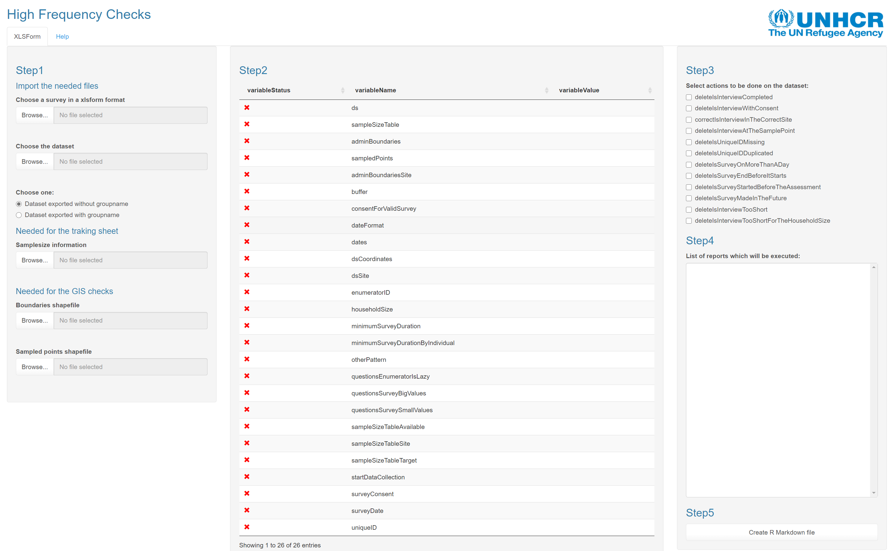
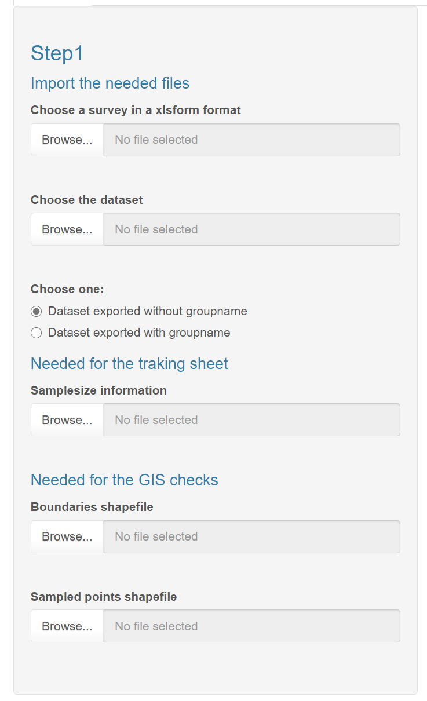
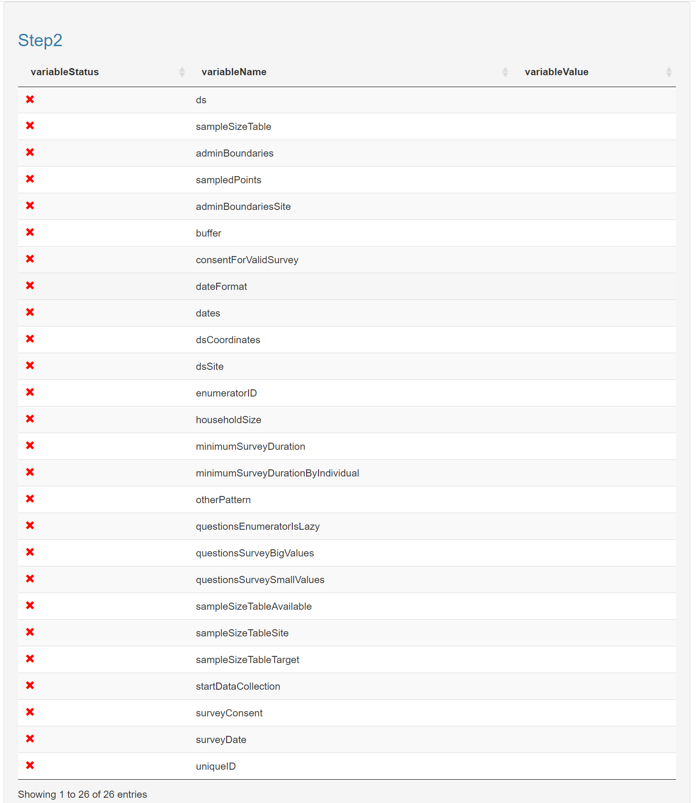
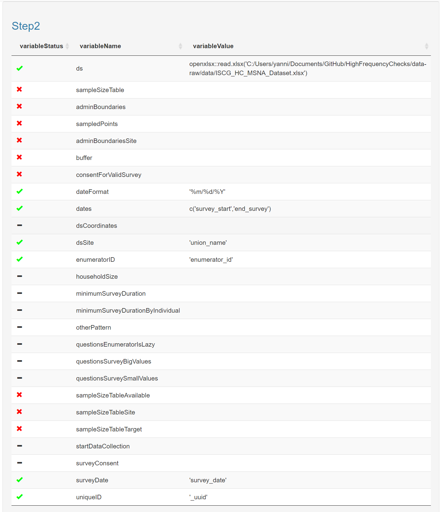
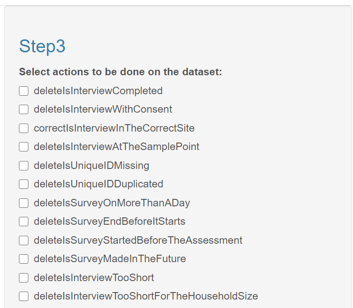
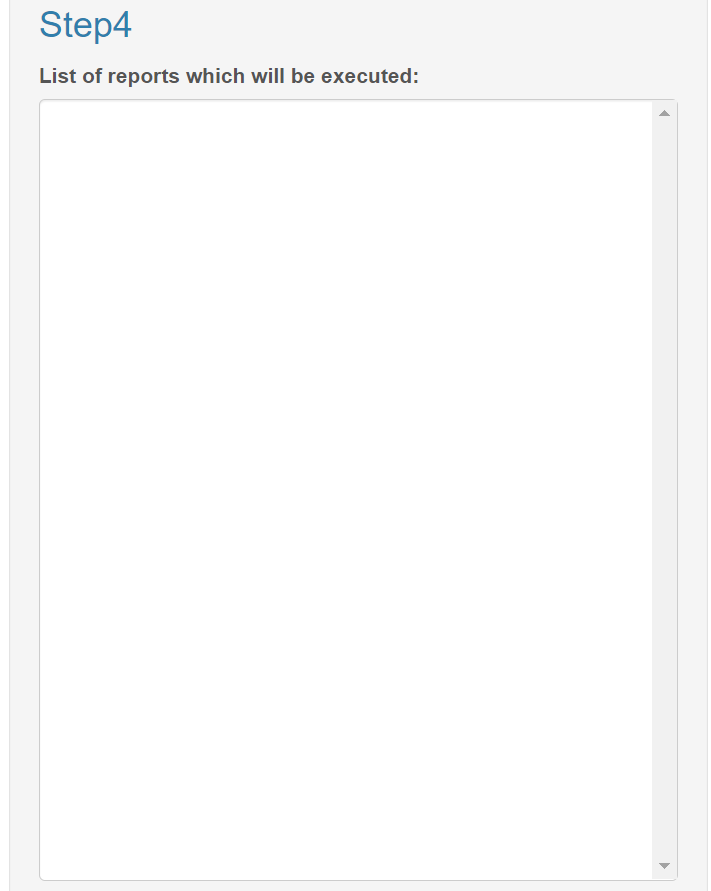
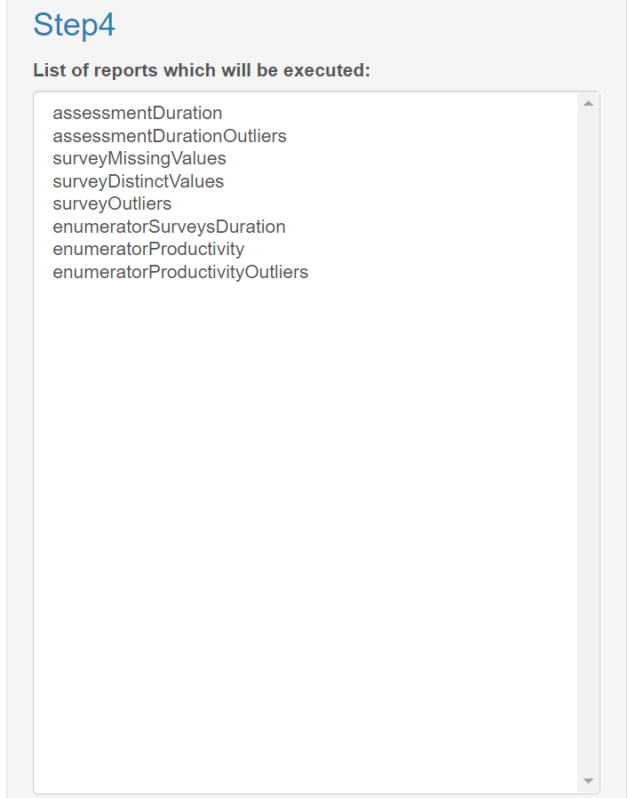
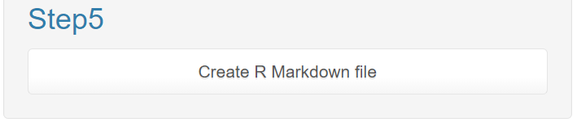

When running the app, you will see the main following screen.

This screen is separated in several parts (by steps you should deal with during the configuration of your HFC report).
Step 1: Uploading the necessary files

1. Import the XLSform containing the survey questionnaire (in a tab named 'survey') and the questions choices (in a tab named 'choices'). It has to be in the .xlsx format.
2. Import the dataset against which you would like to run the HFC. It has to be a dataset generated form the questionnaire imported previously. It has to be in the .csv format.
3. Choose if when you exported the questionnaire from kobo you did it with the generation of the groupname (which should be the good behavior).
4. Import the sample size information (meaning the number of survey you intend to perform per site, and the number of points you sampled). It has to be in the .csv format.
5. Import the shapefile use for the Site boundaries (you will have to select all the files, meaning the .shp, .shx, .cpg, .dbf, .prj, .qpj, and so on).
6. Import the shapefile use for the sampled points (you will have to select all the files, meaning the .shp, .shx, .cpg, .dbf, .prj, .qpj, and so on).
Step 2: Defining the necessary variables to execute the HFC
When uploading the files, you will see the table being updated
|  |  |
By clicking on the variable name, you will be able to define the remaining variables (conditionally the status allows it to be defined).
This status inform you the variable is not yet defined and it cannot be defined at this moment (one or more necessary files has not been uploaded yet, or another necessary variable has to be defined before).
This status inform you the variable is not yet defined but could be.
This status inform you the variable has been defined.
Step 3: Defining the action to be performed on the dataset when executing the HFC

In this box, you can defined if you want the survey being marked for deletion if a specific test find the survey has an issue. See the functions documentation for more (especially the functions starting with is.
Step 4: Summary of the functions which will be executed based on the configuration

When you launch the app, the step 4 is blank, but when you will start to configure the variables, you will see the list being filled based with the functions which will be executed when running the HFC report. The list is determined based on the variables you have defined in the Step 2.
Step 5: Generating the .Rmd

This last step, will create the RMarkdown file to be executed to generate the report.
In the same time the configuration defined is saved in the XLSform (tab 'HFC'), for you not having to redo the whole process if you would like to update it.